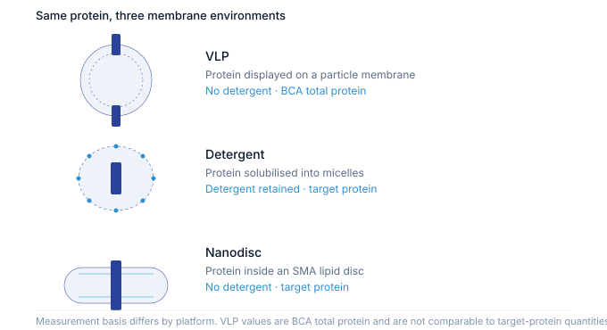
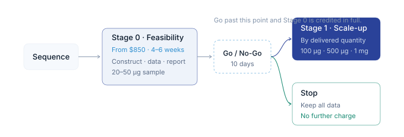
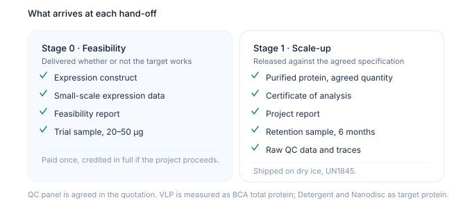

The protein is not the hard part. Keeping it folded is.
Hydrophobic by design
Transmembrane segments aggregate once the lipid environment is gone. A clean band on a gel is not evidence of a folded protein.
Expression is toxic
Over-expressing a membrane protein loads the host. Yield and host choice are coupled, not independent.
Purification removes the context
Every step that strips detergent or lipid takes the protein further from the state you need to assay against.
Conformation is a separate test
Activity has to be shown, not assumed. That is why the assay panel is agreed before the project starts.
Same protein, three membrane environments.

VLP
Displayed on a particle membrane. No detergent. Measured as BCA total protein, so values are not comparable with target-protein quantities.
Detergent
Solubilised into micelles. Detergent is retained and cannot be stripped. Measured as target protein.
Nanodisc
Reconstituted into an SMA lipid disc. No detergent. Measured as target protein.
A failure should cost a known amount.
We split feasibility from scale-up. You pay for the answer to "can this be made" before you pay for the quantity.

Feasibility
The answer to "can this be made", before you pay for the quantity.
| Format | From | Lead time |
|---|---|---|
| VLP | from €850 | 4–6 weeks |
| Detergent | from €1,500 | 6–8 weeks |
| Nanodisc | from €2,000 | 8–10 weeks |
| All three, in parallel | from €3,500 | 12–15 weeks |
- Delivered: expression construct, small-scale expression and purification data, feasibility report, 20–50 µg trial sample.
- A Go / Switch / Stop decision within 10 business days.
- The Stage 0 fee is credited in full against Stage 1.
- If the project stops, only the feasibility fee is charged.
Scale-up
Priced against the quantity actually delivered.
- Priced by delivered protein: 100 µg / 500 µg / 1 mg.
- Indicative pricing is issued with the quotation — request it with your target.
- Delivered: purified protein, certificate of analysis, project report, retention sample, raw QC data.
- Below the agreed quantity or purity: the stage is not charged, or is settled pro rata against what was delivered.
What actually ships.

Dry ice, UN1845. Retention samples held 6 months.
Five steps, one working week to a price.
| Step | Stage | Lead time | What happens |
|---|---|---|---|
| 01 | Enquiry | 1 business day | RFQ form or email, NDA signed. Missing sequence, UniProt ID, topology or intended application is returned for completion. |
| 02 | Review | 3 business days (5 for complex targets) | Sequence analysis, topology prediction, platform recommendation, risk grading. |
| 03 | Quotation | 3 business days, valid 30 days | Proposal and priced quotation, one revision included. |
| 04 | Contract | 5 business days | MSA + SOW or PO. International orders add proforma invoice, Incoterms and export review. |
| 05 | Execution | per schedule | Prepayment releases the run. Fortnightly updates. Go/No-Go at the end of Stage 0. Protein, CoA and cold chain. Acceptance. 30 days of technical support. |
The things a project manager asks on the first call.
Because the product is a particle bearing the target alongside other membrane proteins, not a purified species. Purity methods built for single proteins do not apply. Concentration is reported as BCA total protein, and an ELISA data set is provided so you can judge the sample against your own antibody.
BCA total protein counts everything in the sample. Target protein counts only the protein you asked for. VLP is quoted on the first basis; Detergent and Nanodisc on the second. The two are not interchangeable and should never be compared line by line.
You pay the feasibility fee and nothing else. You keep the expression construct, the small-scale data, the feasibility report and any trial sample produced. There is no obligation to continue and no further charge.
Yes. Send the plasmid map or the sequence with the intended tag and host. If neither a sequence nor a construct exists, construct design is part of Stage 0.
It depends on the downstream assay, not on the target. Immune raising and antibody screening favour VLP for cost and speed. Surface plasmon resonance, bio-layer interferometry and structural work need a defined quantity of target protein, which points to Detergent or Nanodisc. If the assay is not yet fixed, run all three in parallel and decide on the comparison report.
No. These are research-grade custom services for discovery and characterisation. They are not manufactured under GMP and are not intended for therapeutic use. Our GMP raw material lines are separate and carry their own documentation.
Scale-up is priced per project against the delivered quantity and the platform, so it is quoted after the target has been reviewed. Stage 0 pricing is published above; Stage 1 pricing is issued with the quotation.
Tell us the target and the assay.
Send the sequence, the downstream application and the quantity you need. We will come back with a feasibility view and an honest answer about whether we are the right partner.
Brief a target